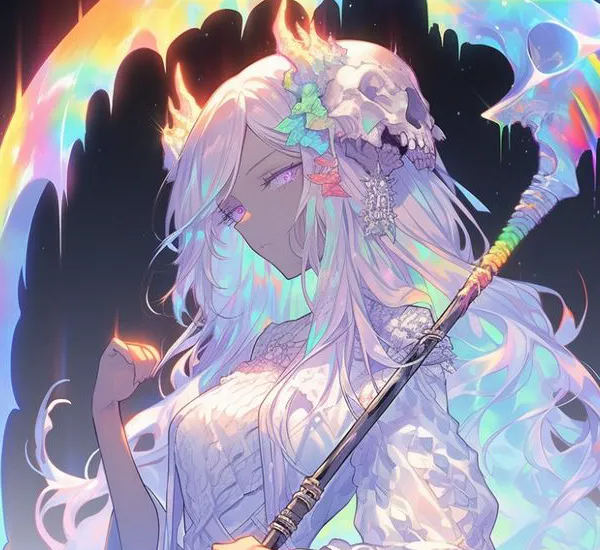
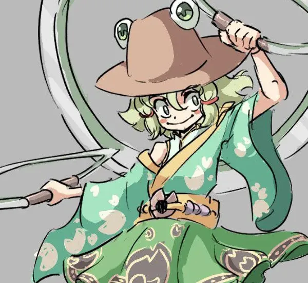

DEUSES
SELECIONE SEU ARTIGO
NINA
Deusa da Jornada
DEMITRISS
Deusa da Morte
HEPARUS
Deus dos Cristais
CITRAS
Deus da Mente

TSUMAKAN
Deusa da Lua
FINN
Deus da Arte
CHRONOS
Deus do Tempo

ARARAKA
Guardiã dos Portões